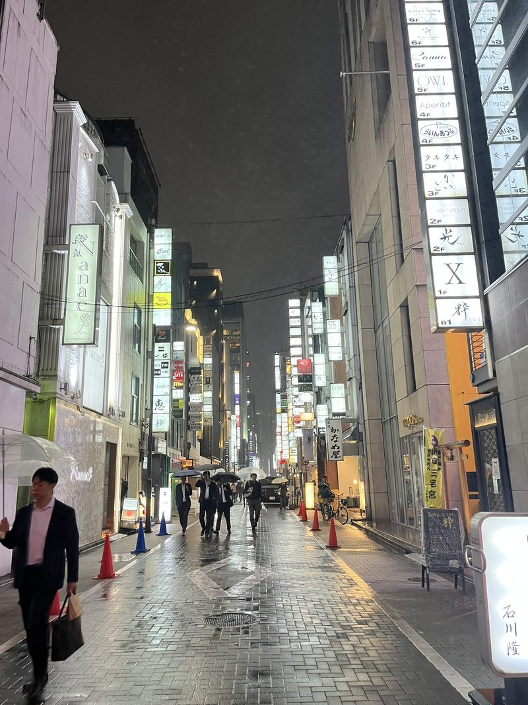
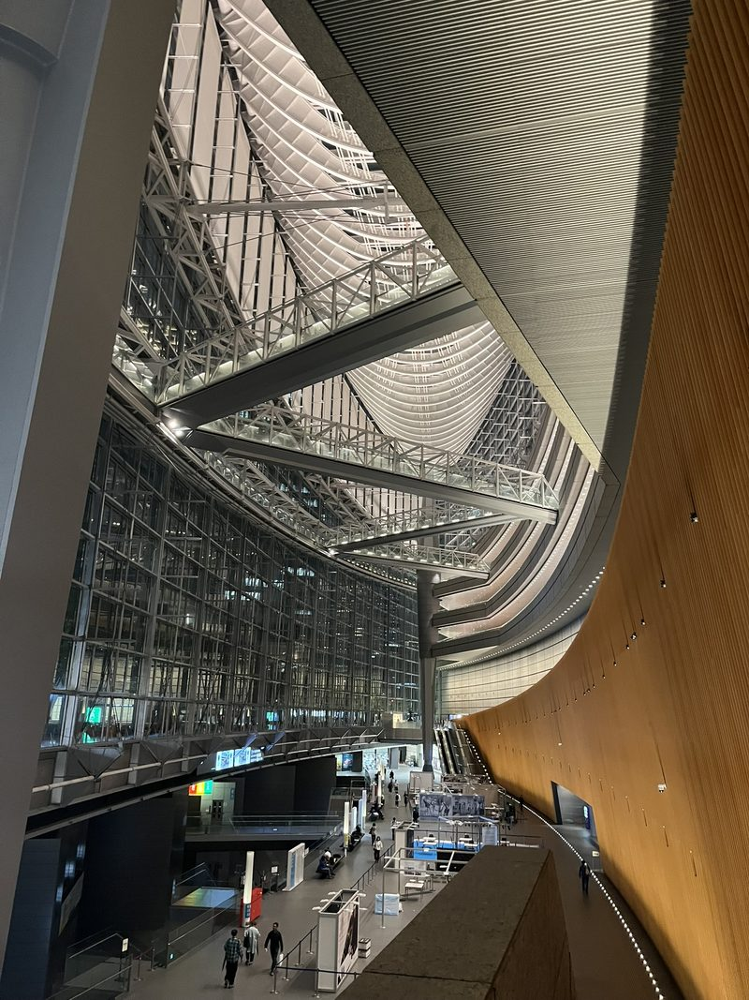
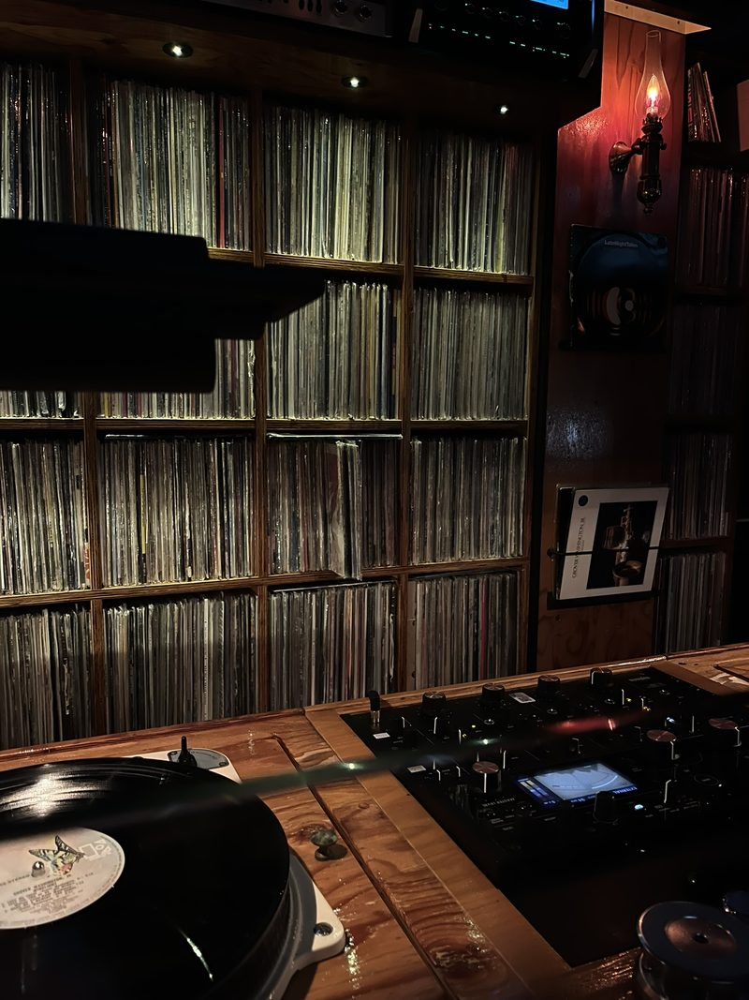
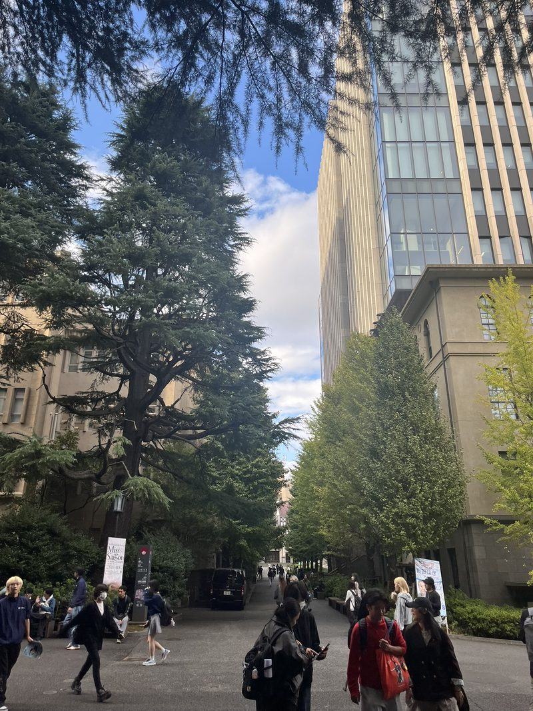
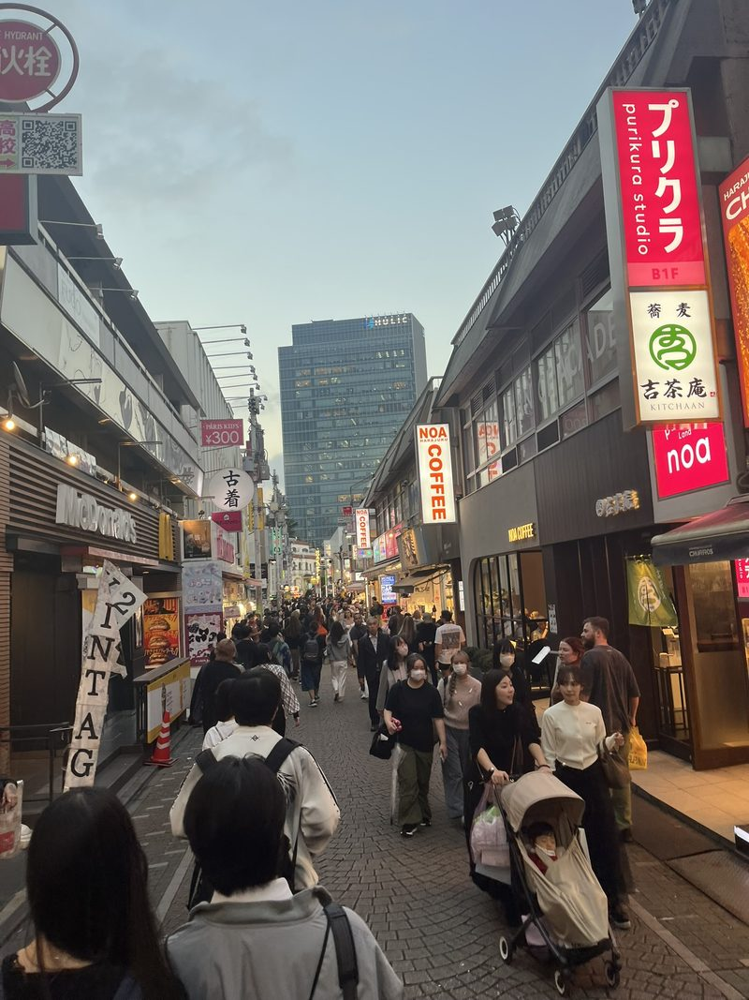

In Hiroshima voelt het als tijd om te gaan, in Tokyo dringt de tijd. Een dagje treinen als in een achtbaan afsluitend, inhaleren we nog twee dagen Tokyo, of andersom. De eerste avond ontnemen het indrukwekkende conferentiecentrum en de neonlichten in de wijk Ginza de adem. Het genot van een highball en negroni brengt regelmaat in het happen naar zuurstof. Zorgvuldig uitgekozen licht en lp’s bewaren de warmte.



Sla. Spullen. In. Breng. Esthetiek. Thuis. Focusmodus richting winkels – aardewerk, kimono’s, pannetjes en messen – maar ik ben te vroeg. Ze zijn nog niet open op een dinsdagmorgen, maar in de kelder van het Chelsea Hotel is al een popband aan de bak die een paar bussen vol jongeren trekt.
Zoveel vintage, het lijkt alsof Japan in het verleden leeft. Het aanbod weerlegt gelijk die opvatting. Tussen de kleurrijke rekken retro kleding hangen achteloos jacks en pakken van de US Army en Air Force, die Japan gruwelijk een verpletterende nederlaag toebrachten.
Ik had me hier voorgenomen het literaire Tokyo van Murakami achterna te gaan. De straatjes in de boeken komen vaak uit echte wijken – wat dacht je van het speeltuintje uit het magnum opus 1Q84, waar Aomame nachtenlang wacht op haar verloren liefde Tengo. Maar het is allemaal te groot, deze metropool, te ver, te verspreid. Wel haal ik de mooie universiteitscampus met een constante stroom in en uit de metro. De studeerkamer van de schrijver is daar minutieus nagemaakt, zodat je voor je ziet hoe alles geproduceerd is – witte bank, houten bureau, lp-spelers. Ook is er een luisterkamer waar geselecteerde jazz van hem als liefhebber klinkt. Ik doe er mijn schoenen uit en doezel weg in de luie fauteuil.


Tussenkop
Want we moeten de nacht in. We vinden een jazzcafé zoals je er een wilt; in een minuscule kelder, publiek op elkaar geplakt tot bij de drummer op schoot. Na elk lang nummer klinkt oprecht doch bescheiden applaus, en maant een man aan de bar de nieuwe line-up naar voren. En zo zijn er in een paar uur meer artiesten dan bezoekers, wachtend in het krappe trappenhuis.
We eindigen in onze eigen wijk, Kamata, afgelegen maar levendig. “Mi casa es tu casa” is het levensmotto van barman Waka, de vermenselijking van esthetiek: perfecte cocktails, alles staat, klinkt en smaakt zoals het hoort. Vraag hem niet naar tips voor Japanse artiesten (ik neem de boxen over), maar kijk simpelweg naar de perfecte glazen. IJskoud water, warm handdoekje, gefermenteerde frisse groentes, huisgemaakte gembersiroop, nieuwe kuipjes mezcal: je krijgt een hoop ongevraagd. Alles wil je in een rijtje voor je neerzetten, zodat de sfeer in evenwicht en toch warmbruin blijft.
Het laatste avontuur is een potje spektakel op een heuvel in Yokohama, waar in een stadionnetje een bekerkraker wordt gespeeld. We komen voor oud-Ajacied Haller, maar die is niet meegereisd na een kopstoot, en we krijgen veel meer. Een fanatieke tribune, zeven goals, de thuisploeg gaat in extremis door. Omdat aan de ene kant Duitse vlaggen hangen uit een ode aan een bepaalde Germaanse trainer, en aan de andere kant “Vamos vamos Marinos”, heeft de wedstrijd een hoog Spanje-Duitsland-gehalte. We dalen in euforie weer af.
Conclusie
Na een stressvolle overstap in China zitten we voldaan in de vlucht naar huis. Wat nog meer te zeggen na deze bundeling van losse ervaringen, gedachten, inzichten. Het prachtige lelijke land; oh zo grijs volgebouwd maar vol geschiedenis om maar naar te hunkeren, wonderlijke tempels, schoonheid verstopt in elke maaltijd, boomstronk en jurk.
Waar de ambulance dank u zegt voor het aan de kant gaan in plaats van oprotten. Waar mensen zich kleden zoals ik, toch koop ik bijna niks. De rugzak zit al vol met: mokken, eetstokjes, een lp, een keukenmes, een mini-kamerscherm, schriften & pennen. Ik verloor een trui en kocht er een. Ik verloor een illusie en verwierf een ervaring. We sliepen in receptieloze gasthuizen en werden geprikt door onzichtbare muggen. We slurpten de uitlaatgassen en groene bergachtige wouden net zo hard op.
Nu zitten we in het vliegtuig, jij en ik, kijkend naar de dansende oranje Russische zon in de pijlvormige kabine. Het licht volgend, kijkend naar beneden, denkend: “Haha, weet je nog dat we daar stonden en keken naar de lucht en al die honderden mensen zagen overvliegen, zittend met een aluminium omhulsel om hen heen.” Dat zijn wij nu, en straks zijn we thuis, met een volle fotorol en een hoofd vol herinneringen aan dit unieke eilandenrijk, en met beide voeten weer op de grond.
Ik ben dankbaar voor mijn tijd op aarde.